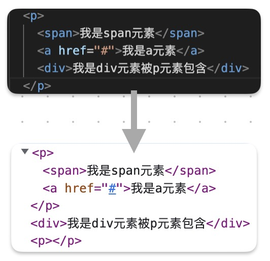

在 html 中，元素可以分为块元素和行内元素
- 块元素（block）
- 独占页面的一行自上向下垂直排列
- 块元素用来对网页进行布局，将一个页面分成一块一块的
nav 元素、main 元素、section 元素
- 最常用的块元素：div
- 行内元素（inline）
- 行内元素只会占自身的大小，自左向右水平排列
a 元素、em 元素、span 元素
- 行内元素一般用放置文字
- 最常用的行内元素：span
- 替换元素：
- img iframe
- 元素的嵌套规则：
- 块元素可以放置块元素，也可以放置行内元素
- 行内元素中尽量不要放置块元素
- a 元素中可以放置除它本身外的任何元素
- p 元素中不能放置块元素
注意：
浏览器在渲染页面时，会自动修复 html 中的语法错误

我是span元素 我是a元素